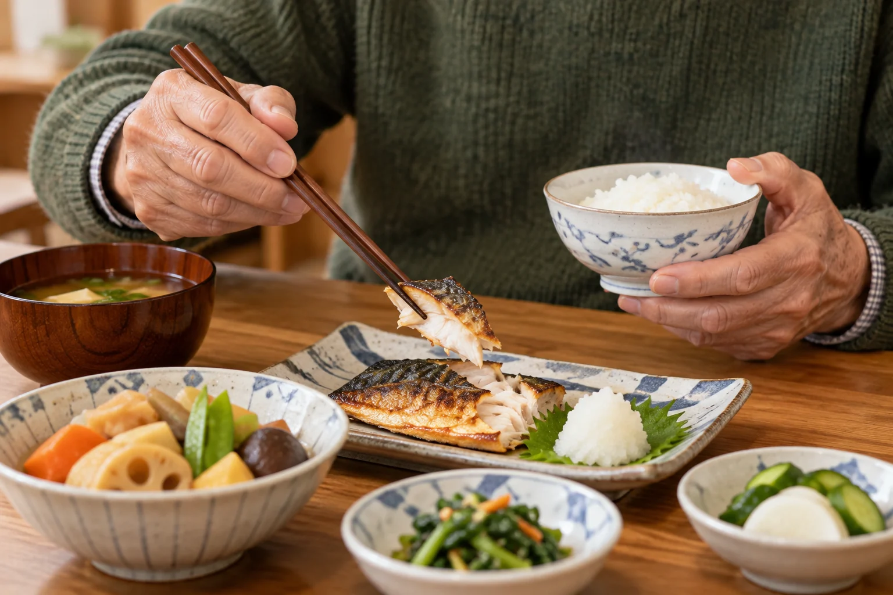
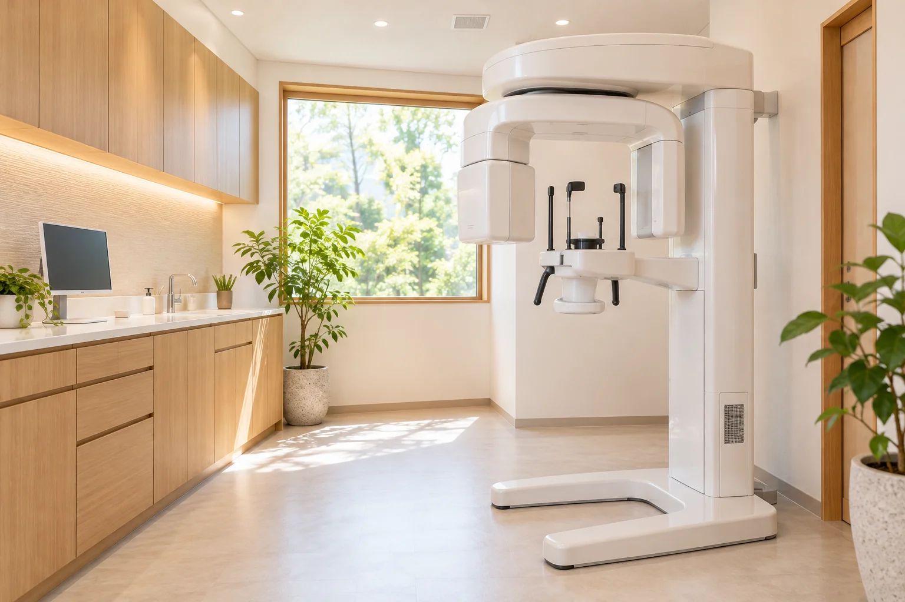

CT撮影付き 無料インプラント相談
もう一度、
もう一度、
おいしく噛める
毎日のために。
- 口腔外科出身の院長が担当
- 入れ歯の相談もできます
- 駐車場12台
院長のインプラント埋入経験 2,500本以上（30年）／10年保証
※写真はイメージです
こんなお悩みはありませんか
- 入れ歯が合わず、食事のたびに痛む
- 硬いものが噛めず、好きな物を残してしまう
- インプラントは怖い、高いと聞いて迷っている
- 年齢や持病があっても大丈夫か知りたい

当院は、インプラントだけを勧める歯科医院ではありません。
入れ歯・ブリッジ・インプラントを並べて、あなたに合う方法を一緒に考えます。
3つの方法をくらべてみましょう
| 入れ歯 | ブリッジ | インプラント | |
|---|---|---|---|
| 噛みごこち | やや弱い | しっかり | 自分の歯に近い |
| まわりの歯 | 金具をかける | 両隣を削る | 削らない |
| 手術 | 不要 | 不要 | 必要（局所麻酔） |
| 費用（1本分） | 保険適用あり | 保険適用あり | 380,000円（税込） |
| 治療期間 | 1〜2か月 | 1〜2か月 | 3〜6か月 |
※費用・期間は目安です。お口の状態により異なります。
インプラントの費用のめやす
失った歯の本数
本
骨が足りない場合の骨造成、静脈内鎮静法は別途費用がかかります（カウンセリングで総額をお見積りします）。
インプラント本体＋かぶせ物
380,000円（税込）
デンタルローン（84回）月々 約5,300円〜
医療費控除の対象になる場合があります。
治療期間・リスクについて：治療期間は3〜6か月（骨造成がある場合は延びます）、通院は5〜8回が目安です。主なリスク・副作用は、術後の腫れ・痛み・内出血、まれに神経の麻痺、インプラント周囲炎、骨と結合しないこと等です。糖尿病・骨粗しょう症のお薬・喫煙などで治療できない場合や、条件がある場合があります。インプラント治療は自由診療（保険適用外）です。
10年保証：定期検診（年2回以上）の受診が条件です。
10年保証：定期検診（年2回以上）の受診が条件です。
「CTの画像を一緒に見ながら、
できること・できないことを
正直にお話しします。」
院長 五十嵐 剛（口腔外科出身）。30年にわたり、親知らずの抜歯からインプラントまで、外科の治療に携わってきました。「怖い」「高い」と感じるのは当然のことです。決めるのは、ご家族と相談してからで大丈夫です。
2,500+院長の埋入経験
CT院内で撮影
10年保証制度
※写真はイメージです
ご家族に、このページを送れます
「親の歯のことが心配」というご家族からのご相談も多くいただいています。
ご相談から治療まで

- お電話・Webでご予約
ご家族の付き添いも歓迎です。 - 無料相談・CT撮影（約60分）
骨の状態を画像で一緒に確認します。 - 治療方法と総額のご説明
紙の資料でお渡しします。持ち帰ってご検討ください。 - 手術（局所麻酔・希望により静脈内鎮静）
1本あたり約1時間が目安です。 - かぶせ物の装着・定期検診
長く使うために、年2回以上の検診をおすすめします。
よくあるご質問
手術は痛いですか？
局所麻酔をするため、手術中に強い痛みを感じることは少ないです。術後に腫れや痛みが出ることがあり、痛み止めをお出しします。不安が強い方は、眠ったような状態で手術を受けられる静脈内鎮静法もあります。
何回通いますか？
相談から完成まで、5〜8回が目安です。骨の状態によって変わります。
70代でも受けられますか？
年齢だけで判断はしません。全身の状態とお薬を確認し、必要に応じてかかりつけ医と連携します。
糖尿病でもできますか？
血糖値が安定していれば治療できる場合があります。治療が難しい場合は、入れ歯など別の方法をご提案します。
一生もちますか？
「一生もつ」とはお約束できません。毎日の歯みがきと定期検診で、長く使っていただけるようにサポートします。
費用が心配です。
デンタルローン（最長84回）がご利用いただけます。医療費控除の対象になる場合もあるため、領収書は大切に保管してください。